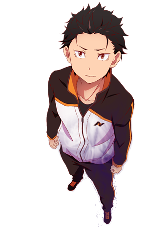

Re:zero
Após sair de uma loja de conveniência, um aluno do colegial chamado Natsuki Subaru é invocado para um mundo de fantasia. Sem sinal de quem o tenha invocado, ele começar a andar pelo os lugares a procura de informação. Enquanto estava caminhando pelo um beco, subaru é atacado por valentões no qual se envolve em uma pequena briga. Ele é salvo por uma linda garota de cabelo prateado, em troca de favor pela a ajuda que teve, o mesmo decidir ajuda a Garota que se identificou como Satella a recuperar um objeto que dela foi roubado. Após uma série de eventos os dois são atacados e mortos por alguém. Subaru acorda no mesmo lugar onde foi invocado e repete as mesmas ações de anteriormente. Assim ele percebe que tem o poder de voltar no tempo através da morte, abilidade que ele chama de "Return by death" (Retorno pela a morte)
Trailer 1º temporada
Pesonagens
-

- subaru Natsuki
Natsuki Subaru é o protagonista da obra Re:Zero Kara Hajimaru Isekai Seikatsu, ele, originalmente, era um NEET que não saía de casa e passava a noite inteira jogando video game. Um dia, Subaru vai comprar comida em uma loja de conveniência e quando ele pisca, é invocado para outro mundo totalmente diferente e sem informação alguma sobre sua situação. Subaru, depois de muitos eventos, ele descobre que tem o poder de voltar no tempo quando morre, o que ele chama de "retorno através da morte", Subaru não usa tão bem assim este poder, não o aproveitando ao máximo. Subaru não tem nenhum tipo de habilidade mágica ou encantamentos, por isso, se torna extremamente difícil de realizar seus objetivos e proteger as pessoas queridas para ele, mas em compensação, ele muito inteligente, conseguindo armar diversos tipos de estratégias para atingir seus objetivos.